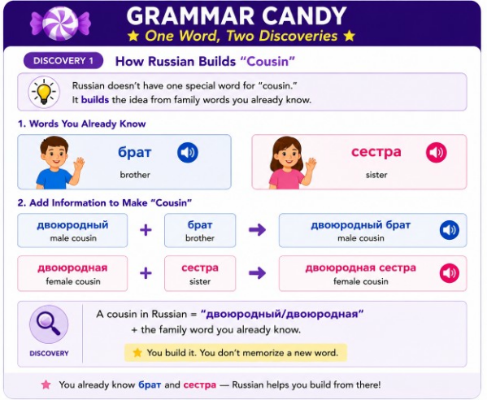
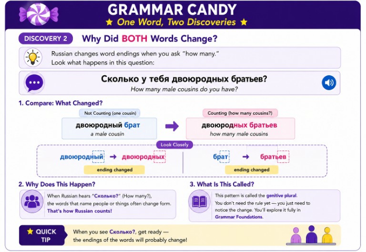
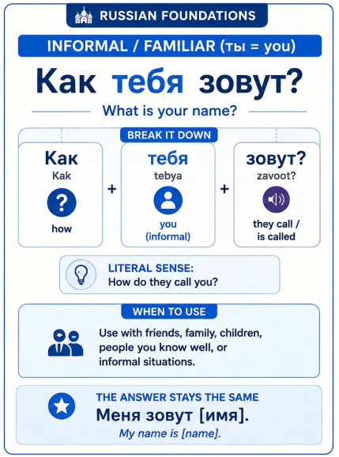
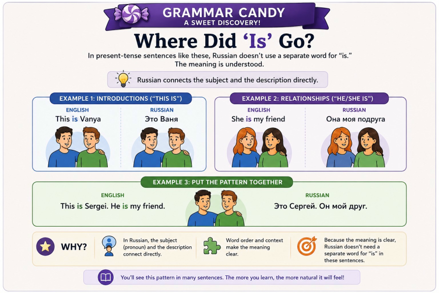
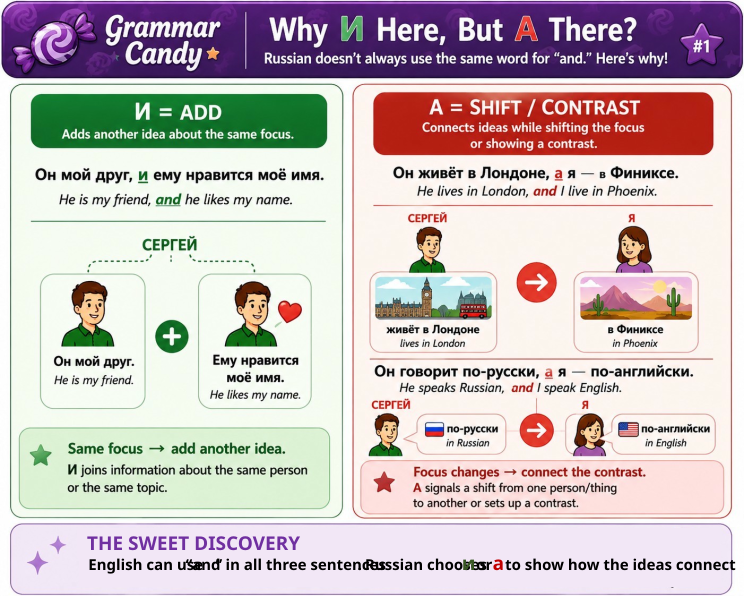
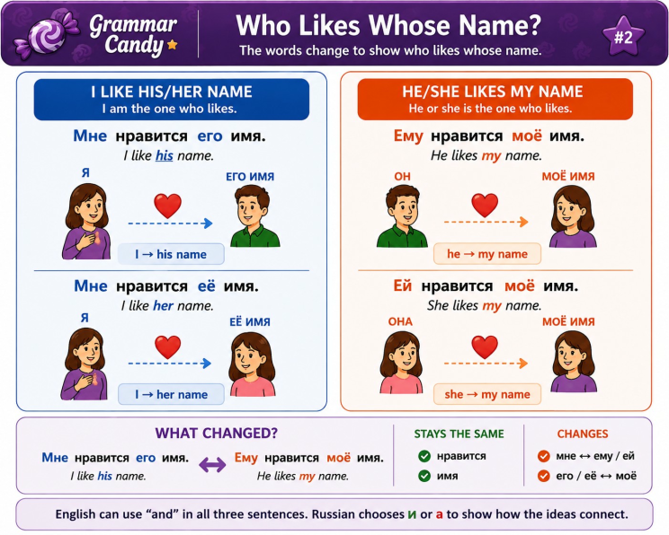
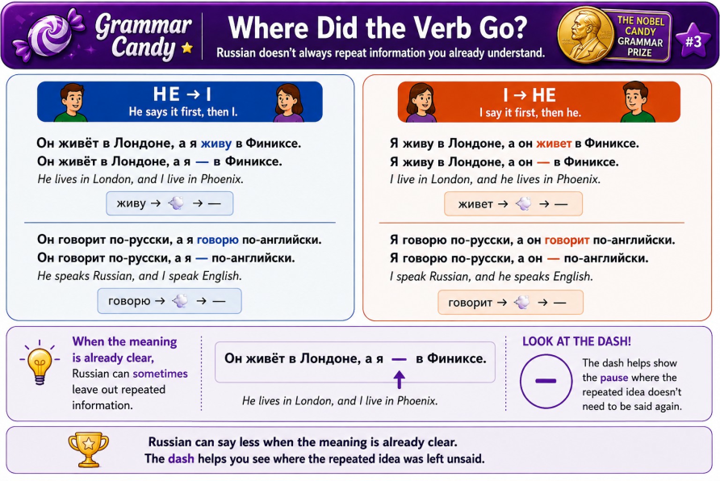

Word 1 — Семья
Семья
seem-YAHFamily
The word for the whole family unit.Russian Foundations
Семья и родственные связи
Every family begins with the people closest to you.
Learn how to name the people closest to you, talk about your parents and siblings, and begin describing your own family with confidence.
Learn how to name the people closest to you, talk about your parents and siblings, and begin describing your own family with confidence.
The first time you use speaking practice, your browser may ask for permission to use your microphone. Choose “Allow while visiting the site” so your spoken Russian can be heard and checked.
Family
The word for the whole family unit.Parents
Plural only — always used together.Mom
The everyday, casual word most families use.Mother
The more formal word — audio provided for both мама and мать.Dad
The everyday, casual word most families use.Father
The more formal word — audio provided for both папа and отец.Brother
A masculine family word.Sister
A feminine family word.Son
A masculine family word.Daughter
A feminine family word.Родители looks difficult at first. Build it gradually instead of trying to say the entire word at once.
Now say the complete word several times. Begin slowly and let it become smoother as it becomes familiar.
You know your immediate family now — let's meet the rest of it. In this lesson, you'll name grandparents, aunts, uncles, cousins, and nieces and nephews, and start using pronouns beyond "my" to talk about someone else's family.
Grandmother
The everyday, neutral word.Grandma
The affectionate word — audio provided for both бабушка and бабуля.Grandfather
The everyday, neutral word.Grandpa
The affectionate word — audio provided for both дедушка and дедуля.Aunt
A feminine family word.Uncle
A masculine family word.Cousin (male)
Literally "cousin-brother" — built from брат, not a separate word.Cousin (female)
Literally "cousin-sister" — built from сестра, not a separate word.Nephew
A masculine family word.Niece
A feminine family word.You already know брат and сестра. Russian uses these familiar family words to build the idea of a cousin—and then those words change form when there is more than one.
Start with Discovery 1 to see how Russian builds “cousin.” Then open Discovery 2 to discover what changes when one cousin becomes more than one.


You already know the family member. Now watch what happens when Russian adds one more piece of information.
Until now, you have mostly talked about your family. Choose a word below and watch who the family belongs to change.
You are talking about Anna's brother. Which word would you choose?
Choose whose family you're asking about. Watch the question and answer change — and watch what stays exactly the same.
Once you've greeted someone and introduced yourself, a natural next step is to ask how they're doing. Russian gives you several useful ways to answer.
How are you?
I'm fine, thank you.
Excellent! / Great!
Fine / Okay / As normal.
Not bad.
Не (not) + плохо (bad)Everything is good / All is well.
Little by little / Getting by.
А у вас? — And you? / How about you?
Turn the dials and watch the phrase change. Try every combination you can think of — right or wrong, correct or mismatched. There's no wrong way to explore here.
Choose a word from a pronoun in row one; then from the specific family relationship in rows two and three.
No dial to click this time. Read each family member below, then type the possessive that fits before it.
Type the word for "my" that belongs with each family member shown below.
Here's a sentence you already know. Something's about to change — see if you can predict what happens before you look.
Now let's change it up by saying: it's her brother, not mine. Ask yourself: Will the word for "brother" change?
Это не мой брат — это брат.
Now let's change it up by saying: it's his sister, not mine. Ask yourself: sister is a feminine word — will его change to match it?
Это не моя сестра — это сестра.
Now let's change it up by saying: we're asking about her name, not yours. Ask yourself: имя is a neuter word — твоё matched that. Will её also change to match?
Это не твоё имя — это имя.
Now let's change it up by saying: they're their parents, not mine. Ask yourself: родители is a plural word — мои matched that. Will их also change to match the plural?
Это не мои родители — это родители.
Now try it without a word bank. Read each English phrase and type what you remember in Russian.
Choose one Russian phrase, then choose its English meaning.
Read the English phrase and say it in Russian before you listen. Then listen, compare, and say it again. Repetition will help build confidence and speaking fluency.
You already know the Russian you need. Now use it in different ways. Each variation asks you to do something new with the language you have learned.
Choose what you want to say. The conversation will adapt to the path you build.
Some blanks take one word. Other turns can become short or longer depending on what you choose. There is more than one conversation that works.
Здравствуйте!
Здравствуйте! утро!
Доброе ! Как зовут?
зовут Michael; А ?
Меня Ваня
Как сегодня?
хорошо, с познакомиться!
Most choices are individual words. Complete expressions such as До свидания and До завтра stay together because they function as a complete choice here.
This is the conversation you created from the choices you made.
The computer reads the other person's lines. When you see Your turn, say the line you built.
Hear the Russian first and let your ears do the work
The Russian stays hidden until you understand what you heard
Listen closely
The Russian is hidden
Your ears did the work
Now the situation gives you the meaning and you decide what Russian belongs there
You were not translating word by word you were deciding what fits the moment
Now the whole conversation is hidden and your ears have to put the meaning together
The Russian stays hidden until you tell us what you understood
You listened for meaning instead of waiting for the words to appear
Choose any door that makes you curious. You can explore one, several, all of them, come back later, or leave whenever you're satisfied.
You already know enough Russian to begin making it yours. Use what you know, follow the clues, and discover how to say a little more about yourself.
You haven't learned this sentence. That's okay. You already know more than you think.
These words may look familiar. What do you notice about their shapes?
What might this person be saying about someone's name? Use natural English. You do not need an exact translation.
Click any word for a quick discovery. Look for the featured question word — it unlocks a little Grammar Candy. 🍬
You'll see what it means, a short example, and how it's used.
Switch between familiar and polite Russian. Watch what changes — and what stays the same.

Как and зовут stay the same. The form of “you” changes:
You already know how to talk about yourself. Now follow the clues and discover how Russian helps you identify, describe, and learn about someone else.
Look at the people and the Russian below. What can you discover before anyone gives you the translation?
The names changed, but one Russian word stayed the same. Look at a few more examples and predict what job Это has.
You noticed that Это stayed the same even when the person changed.
Это helps us identify or introduce someone:
Это + person
For now, remember the pattern: Это + person.
You already know Ваня and Анна. Now look at what happens when we say something about them.
Compare the two Russian statements. What changes when we're talking about Ваня instead of Анна?
The words didn't change randomly. They changed depending on who we were talking about.
Russian doesn't use друг for every friend.
подруга is the feminine counterpart of друг. We aren't simply changing друг to друга.
Notice the bigger pattern: Russian often gives you clues about whether you're talking about a male or female person. Sometimes a word changes its form, and sometimes Russian uses a related word.
You do not need this grammar to continue. But if you're curious, take a closer look at something Russian does differently from English.

You've seen most of these pieces before. One part is new. Use what you already know to figure out what the whole idea might mean.
You haven't learned this word yet. That's okay. Look at everything around it. What job do you think it might be doing?
Use everything you recognize to work out the whole idea. Use natural English. You do not need an exact translation.

You have greeted someone, exchanged names, and talked about how you are doing. What might naturally happen next?
Follow one small clue at a time. You may discover that the Russian you already know can carry a conversation farther than you expected.
You already know one question about a person. Compare it with a new one and use the structure as evidence.
Look at the first word in each question. Then notice the familiar вас and the new form вы. You do not need the grammar yet. Use the clues.
Use natural English. This is a prediction, not a test.
A conversation can move naturally from someone's name to something about their life.
Click any word for a quick discovery. Look for the featured question word — it unlocks a little Grammar Candy. 🍬
You'll see what it means, a short example, and how it's used.
Russian changes the verb to match who is doing the action.
You just discovered how to ask where someone lives. Now listen to the answer and let the conversation itself give you a clue.
The answer contains Я, which you already recognize. What do you think the person just told you?
You know the person's name and where they live. Now the conversation moves to language.
A real answer does not have to be all-or-nothing. Choose the response that fits you best.
Click any verb to get a quick peek. The featured verb unlocks a little Grammar Candy.
You'll see what it means, a short example, and how it's used.
Experiment, listen, and notice what changes.
Change who is speaking. Watch what happens to the verb.
This was never given to you as one long script. You reached it by following clues and taking one natural step at a time.
The original Greetings & Introductions lesson ended earlier. You used what you already knew to understand and participate in Russian that was never taught as a memorized conversation.
You have learned words, phrases, and complete sentences. Now experiment with what happens when familiar Russian starts working together.
How much meaning can you create from Russian you already know?
You already recognize most of these ideas. First look at them separately. Then let the laboratory connect them.
This is Sergei. He is my friend, and he likes my name. He lives in London, and I live in Phoenix. He speaks Russian and I speak English.
Separate ideas became connected language. Notice how и joins ideas and а lets the speaker compare Sergei with himself.
Russian just did a few interesting things. Choose a Grammar Candy button below to look closer. Explore them one at a time.



Now the relationship changes. This time, connect information about Anna and something the two speakers have in common.
This is Anna. I really like her name, and she is my friend. She lives in Moscow, and we both speak Russian.
This time the ideas do more than compare two people. They show a relationship and something the speaker and Anna share.
Connected ideas can do more than describe or compare. One small bridge can explain why something is true.
Anna and I speak Russian because we like the Russian language.
You are no longer only listing facts. You connected an idea to its reason.
None of this was taught to you as one memorized paragraph. You built toward it by connecting ideas you already knew.
Это Сергей. Он мой друг, и ему нравится моё имя. Он живёт в Лондоне, а я — в Финиксе. Он говорит по-русски, а я — по-английски. Это Анна. Мне очень нравится её имя, и она — моя подруга. Она живёт в Москве, и мы обе говорим по-русски. Мы с Анной говорим по-русски, потому что нам нравится русский язык.
This is Sergei. He is my friend, and he likes my name. He lives in London, while I live in Phoenix. He speaks Russian, while I speak English. This is Anna. I really like her name, and she is my friend. She lives in Moscow, and we both speak Russian. Anna and I speak Russian because we like the Russian language.